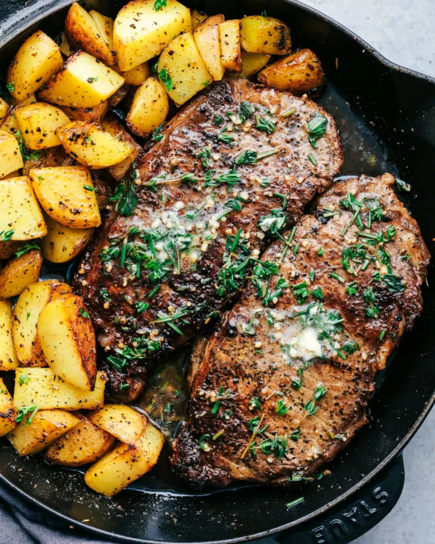

Garlic Herb Butter Steak with Roasted Potatoes

Description
A restaurant-quality main course for two made easy at home. Juicy, pan-seared steak is basted with melted garlic herb butter for rich
flavor and a golden crust, paired with perfectly roasted baby potatoes seasoned with rosemary. It’s hearty, flavorful, and
beautifully plated — ideal for impressing guests or enjoying a gourmet night in.
Ingredients
For the Potatoes
- 1 lb baby potatoes (halved)
- 1 tbsp olive oi
- Salt, pepper, and dried rosemary
For the Steak
- 2 ribeye or strip steaks (~1 inch thick)
- Salt & pepper
- 2 tbsp olive oil
- 2 tbsp unsalted butter
- 3 garlic cloves (crushed)
- 2 sprigs fresh rosemary or thyme
Steps
Roasted Potatoes
- Preheat oven to 425°F (220°C).
- Toss halved potatoes with olive oil, salt, pepper, and rosemary.
- Spread on a baking sheet and roast for 25–30 mins, flipping halfway.
Steak
- Pat steaks dry and season both sides with salt and pepper.
- Heat a cast iron skillet over medium-high heat. Add olive oil.
- Sear steaks for 3–4 minutes per side.
- In the final minute, reduce heat to medium and add butter, garlic, and herbs.
- Baste the steak with the melted herb butter for 1 minute.
- Remove and let rest for 5 minutes before serving.
- Optional: Add green beans or asparagus sautéed in leftover garlic butter.